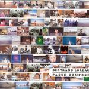

| Artist: | Bertrand Loreau |
| Title: | Passé Composé |
| Label: | Musea DR 8414.AR |
| Length(s): | 71 minutes |
| Year(s) of release: | 2002 |
| Month of review: | [09/2002] |
Sample this album in MP3 or RealAudio
Most songs however are quite mellow, being too simple, too straightforward and sometimes downright trite. Une Autre Vie for instance: too easy. I can well imagine Loreau being very happy with this kids, but A Son Is Born and A Daughter Is Born are the low points on an already not so great album. The two following tracks have the same problem. Beira-Mar De Fortaleza is better: a sad track but packing more emotion in my book than the previous four tracks. The follow-up sounds clear enough, but is too careful, too simple. The sensitivity is there, but what is lacking is the bite that makes it from a listening pastime to a listening experience. Le Pays Blance simply muddles along, The Lost Lake Of Crystal has TD sequencers, but in a very peaceful way. The New Agey feel pervading the music stays. Was A Priere falls short in the melodic department, KS Impression (one would expect Klaus Schulze to be in influence here), is more like proper electronic music, but like loose sand nonetheless. More pace in Simulacre Of A Dream, but again the music continues to be easy-going and monotone. Alone Together, with guitar, is much better: more emotion, but unfortunately too short tto make a lasting impression. Heavy Dream features cliché guitar. Just Follow The Sequence and closer A Bad Movie are quite different: the first one is like Jan Hammer's Miami Vice with psyche guitar, the latter is repetitive and raw. Too late for a change, though.
The conlusion: Electronic music with little to my liking.